Hugo and Github Pages
Intro
- Hugo is one of the most popular open-source static site generators.
- Github Pages is a static site hosting service that takes HTML, CSS, and JavaScript files straight from a repository on GitHub, optionally runs the files through a build process, and publishes a website.
Create a Github repository
- Go on the page new repository on Github.
- Enter the name of the repository.
- Select public and add a README file.
- Click on Create Repository.
- Copy the repository url.
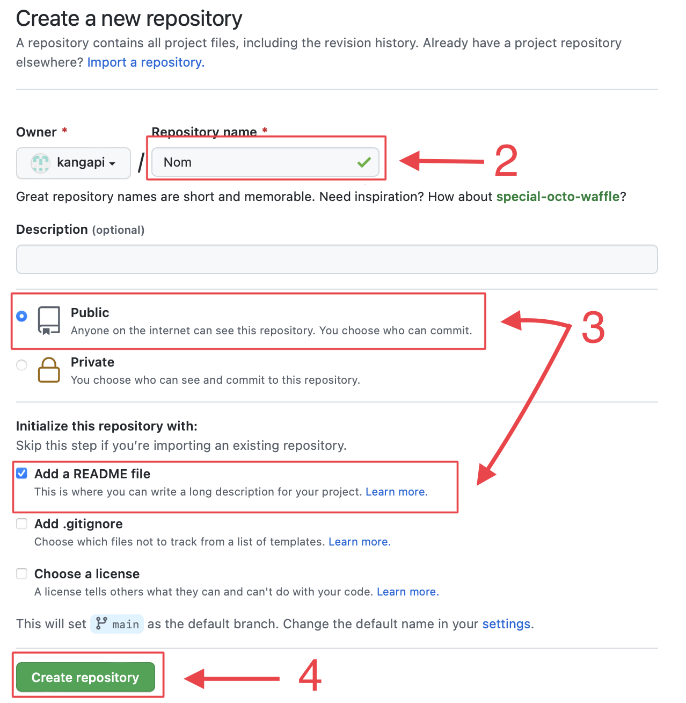
Terminal
- Open the console.
- Change directory.
- Clone the repository
- Open the folder that has just been created in the console
- Go a new branch with the name setup-hugo for exemple.
- Create an Hugo Website with yaml files
Congratulations! Your new Hugo site is created in ..... Just a few more steps and you're ready to go: 1. Download a theme into the same-named folder. Choose a theme from https://themes.gohugo.io/ or create your own with the "hugo new theme <THEMENAME>" command. 2. Perhaps you want to add some content. You can add single files with "hugo new <SECTIONNAME>/<FILENAME>.<FORMAT>". 3. Start the built-in live server via "hugo server". Visit https://gohugo.io/ for quickstart guide and full documentation. - Add a theme in this tutoriel it's PaperMod
Needed when you reclone your repo (submodules may not get cloned automatically)
Cloning into 'PaperMod/kangapi-docs-video/themes/PaperMod'... remote: Enumerating objects: 27650, done. remote: Counting objects: 100% (203/203), done. remote: Compressing objects: 100% (119/119), done. remote: Total 27650 (delta 94), reused 152 (delta 62), pack-reused 27447 Receiving objects: 100% (27650/27650), 13.80 MiB | 17.23 MiB/s, done. Resolving deltas: 100% (14557/14557), done. - Change config.yaml replace all to config to this code
- Don't forget to change the first line which is essential for proper functioning on Github Pages
baseURL: "https://<github-username>.github.io/<repository-name>" title: ExampleSite paginate: 5 theme: PaperMod enableRobotsTXT: true buildDrafts: false buildFuture: false buildExpired: false googleAnalytics: UA-123-45 minify: disableXML: true minifyOutput: true params: env: production # to enable google analytics, opengraph, twitter-cards and schema. title: ExampleSite description: "ExampleSite description" keywords: [Blog, Portfolio, PaperMod] author: Me # author: ["Me", "You"] # multiple authors images: ["<link or path of image for opengraph, twitter-cards>"] DateFormat: "January 2, 2006" defaultTheme: auto # dark, light disableThemeToggle: false ShowReadingTime: true ShowShareButtons: true ShowPostNavLinks: true ShowBreadCrumbs: true ShowCodeCopyButtons: false disableSpecial1stPost: false disableScrollToTop: false comments: false hidemeta: false hideSummary: false showtoc: false tocopen: false assets: # disableHLJS: true # to disable highlight.js # disableFingerprinting: true favicon: "<link / abs url>" favicon16x16: "<link / abs url>" favicon32x32: "<link / abs url>" apple_touch_icon: "<link / abs url>" safari_pinned_tab: "<link / abs url>" label: text: "Home" #icon: /apple-touch-icon.png #iconHeight: 35 # profile-mode profileMode: enabled: false # needs to be explicitly set title: ExampleSite subtitle: "This is subtitle" imageUrl: "<img location>" imageWidth: 120 imageHeight: 120 imageTitle: my image buttons: - name: Posts url: posts - name: Tags url: tags # home-info mode homeInfoParams: Title: "Hi there \U0001F44B" Content: Welcome to my blog socialIcons: - name: twitter url: "https://twitter.com/" - name: stackoverflow url: "https://stackoverflow.com" - name: github url: "https://github.com/" analytics: google: SiteVerificationTag: "XYZabc" bing: SiteVerificationTag: "XYZabc" yandex: SiteVerificationTag: "XYZabc" cover: hidden: true # hide everywhere but not in structured data hiddenInList: true # hide on list pages and home hiddenInSingle: true # hide on single page editPost: URL: "https://github.com/<path_to_repo>/content" Text: "Suggest Changes" # edit text appendFilePath: true # to append file path to Edit link # for search # https://fusejs.io/api/options.html fuseOpts: isCaseSensitive: false shouldSort: true location: 0 distance: 1000 threshold: 0.4 minMatchCharLength: 0 keys: ["title", "permalink", "summary", "content"] menu: main: - identifier: categories name: categories url: /categories/ weight: 10 - identifier: tags name: tags url: /tags/ weight: 20 - identifier: example name: example.org url: https://example.org weight: 30 # Read: https://github.com/adityatelange/hugo-PaperMod/wiki/FAQs#using-hugos-syntax-highlighter-chroma # pygmentsUseClasses: true # markup: # highlight: # # anchorLineNos: true # codeFences: true # guessSyntax: true # lineNos: true # style: monokai - Check your site builds by running the below command in your terminal, and then visiting
http://localhost:1313/<repository-name>/.
Push to Github
- Add all files
- Commit the current state of our files with a commit description
- Now push our local commit up to the Github server with
git pushEnumerating objects: 9, done. Counting objects: 100% (9/9), done. Delta compression using up to 8 threads Compressing objects: 100% (5/5), done. Writing objects: 100% (8/8), 2.11 KiB | 2.11 MiB/s, done. Total 8 (delta 0), reused 0 (delta 0), pack-reused 0 remote: remote: Create a pull request for 'setup-hugo' on GitHub by visiting: remote: https://github.com/<github-username>/<github-repository-name>/pull/new/setup-hugo remote: To https://github.com/<github-username>/<github-repository-name>.git * [new branch] setup-hugo -> setup-hugo -
If we head back onto Github to our repo's page, we should now see a banner informing us that a branch has been updated and providing us with an option to Compare &pull request. Click that big green button !
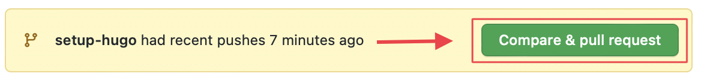 * Click on the green button that has just appeared 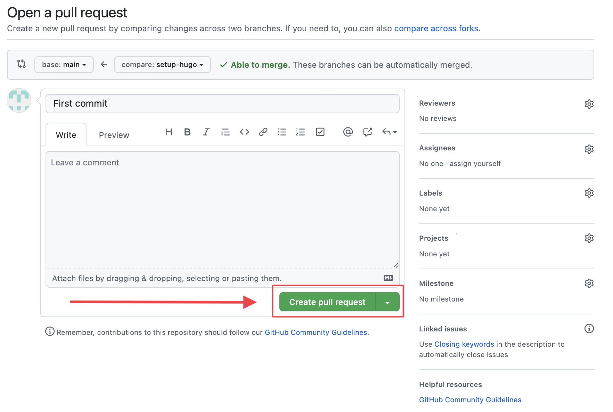 * Click on the new button 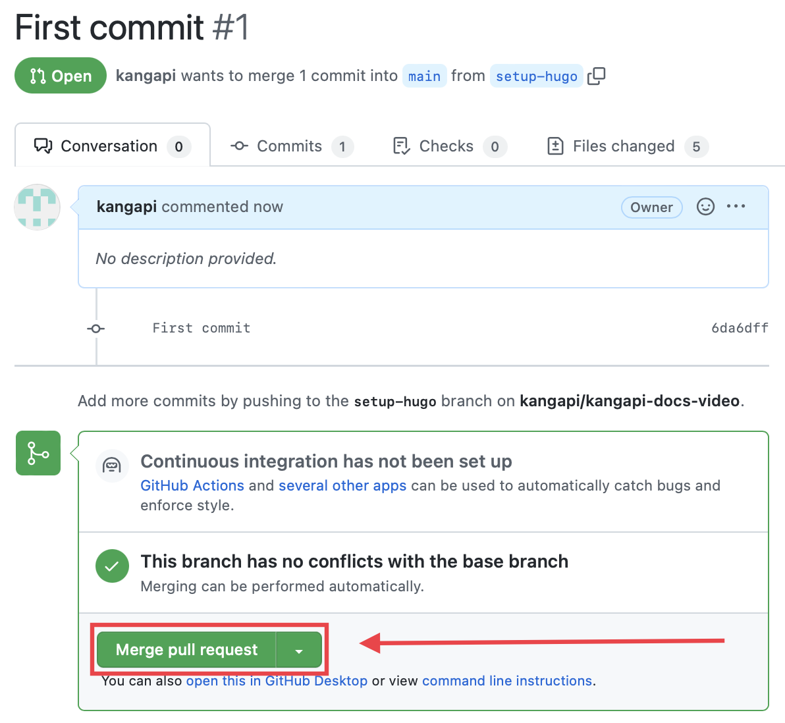 * check if your commit was successfully merged. If so, there should be a purple merged button 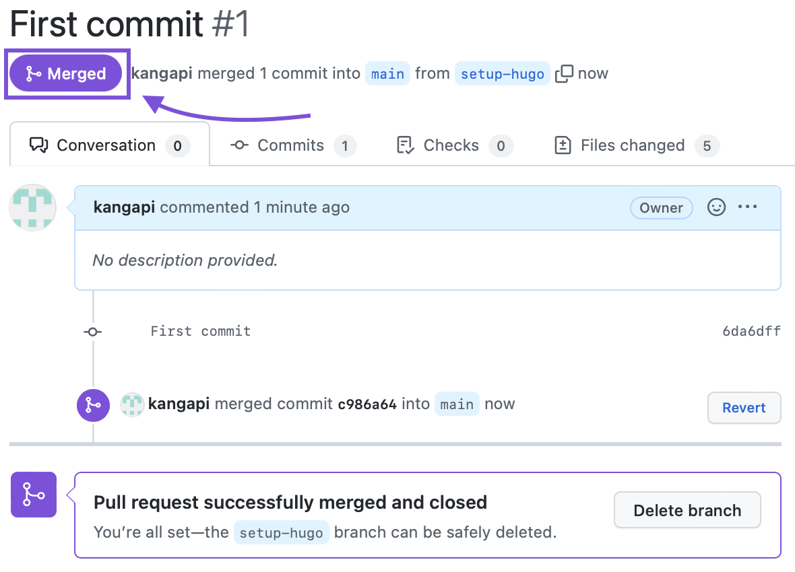
-
In your terminal, run the following:
remote: Enumerating objects: 1, done. remote: Counting objects: 100% (1/1), done. remote: Total 1 (delta 0), reused 0 (delta 0), pack-reused 0 Unpacking objects: 100% (1/1), 623 bytes | 623.00 KiB/s, done. From https://github.com/<github-username>/<github-repository-name> 8de614a..c986a64 main -> origin/main Updating 8de614a..c986a64 Fast-forward .gitmodules | 3 ++ .hugo_build.lock | 0 archetypes/default.md | 6 +++ config.yaml | 134 ++++++++++++++++++++++++++++++++++++++++++++++++++ themes/PaperMod | 1 + 5 files changed, 144 insertions(+) create mode 100644 .gitmodules create mode 100644 .hugo_build.lock create mode 100644 archetypes/default.md create mode 100644 config.yaml create mode 160000 themes/PaperMod
Continous Deployment
In this section we will create a workflow that will archieve this for us. It will run on Github Actions
- Let's start by cheking out a new branch in our local repo
- Github Actions are automatically triggered by files that are stored in a special folder called
.github/workflows. So lets create that folder ! - Create a
cd.yml(cdis short for Continous Deployment) file inside the.github/workflows. -
Open the
cd.ymlin favorite text editor. -
Copy and paste into your file.
name: Build and Deploy Site on: push: branches: - main # Set a branch to deploy pull_request: branches: - main jobs: build-and-deploy-site: runs-on: ubuntu-latest steps: - name: Checkout repo uses: actions/checkout@v2 with: submodules: true # Fetch Hugo themes (true OR recursive) fetch-depth: 0 # Fetch all history for .GitInfo and .Lastmod - name: Setup Hugo uses: peaceiris/actions-hugo@v2 with: hugo-version: 'latest' extended: true - name: Build site with Hugo run: hugo --minify - name: Check HTML uses: chabad360/htmlproofer@master with: directory: ".public" arguments: --only-4xx --check-favicon --check-html --assume-extension --empty-alt-ignore --disable-external continue-on-error: true - name: Deploy to Github Pages if: github.event_name == 'push' && github.ref == 'refs/heads/main' uses: peaceiris/actions-gh-pages@v3 with: github_token: ${{ secrets.GITHUB_TOKEN }} publish_dir: ./public - Add commit and push the
cd.ymlfile to github we did before. -
Create a new pull request like the step 4 in push-to-github. 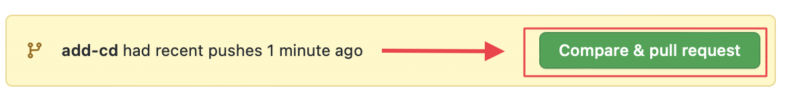
- Click on the green button that has just appeared
- Click on the new button 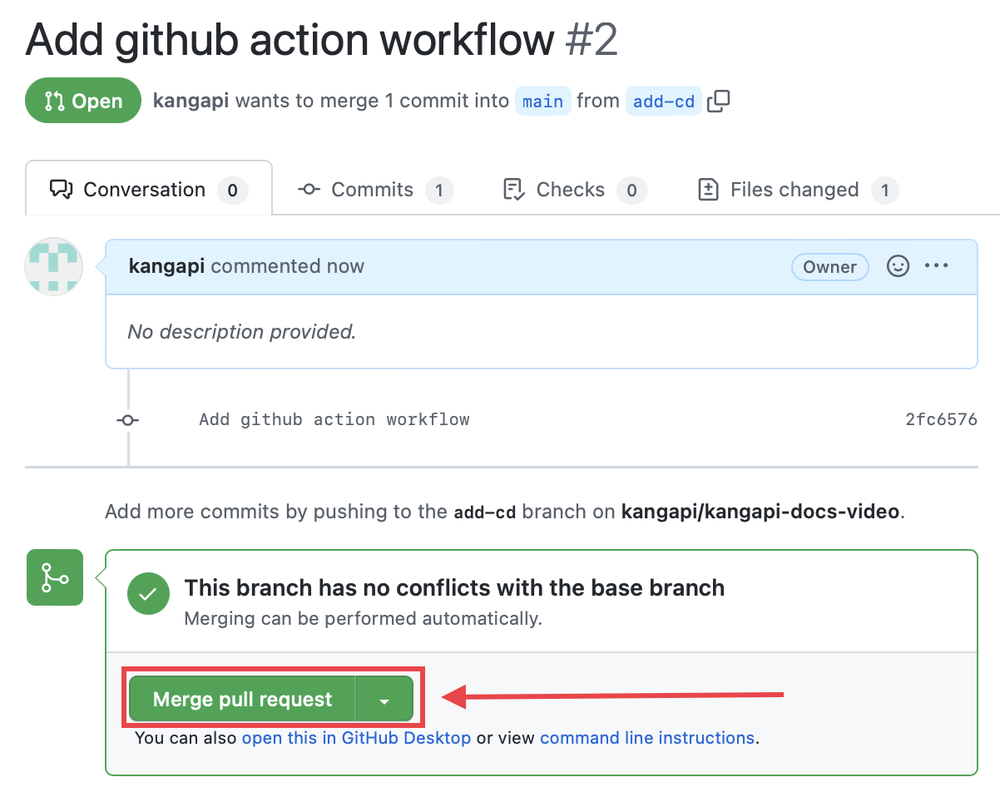
- check if your commit was successfully merged. If so, there should be a purple merged button
- Go in the actions menu.
- Click on Build and Deploy Site. 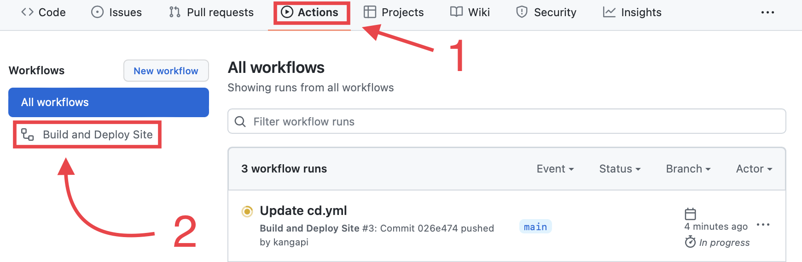
- You should see a yellow circle. 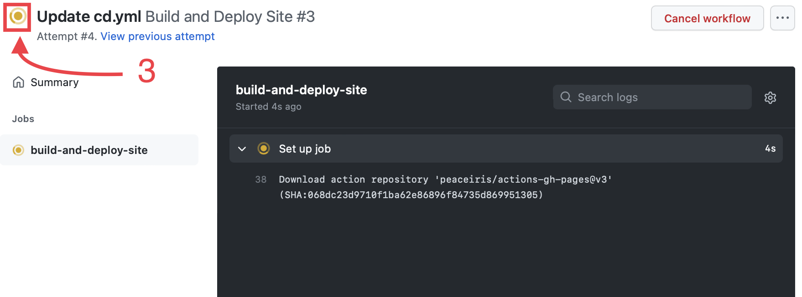
- After less than a minute, you should see the circle in green. 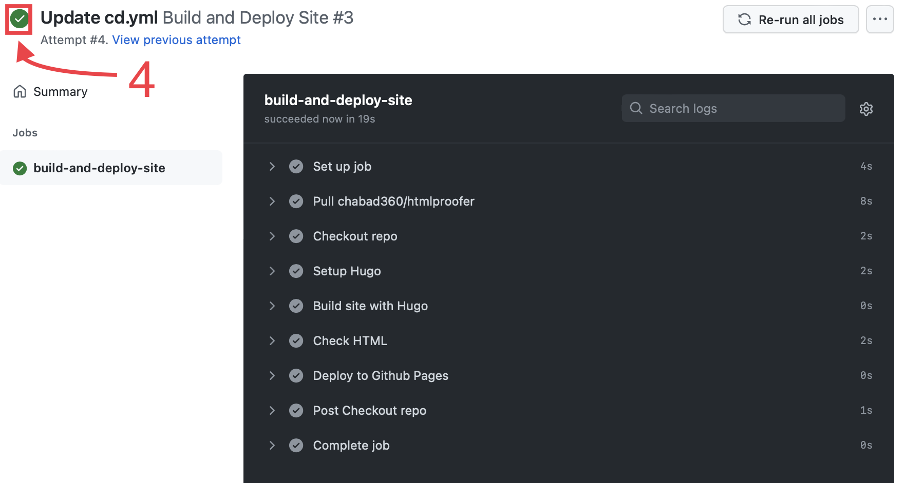
- Go in your repository settings in Branches
- Click on Add rule 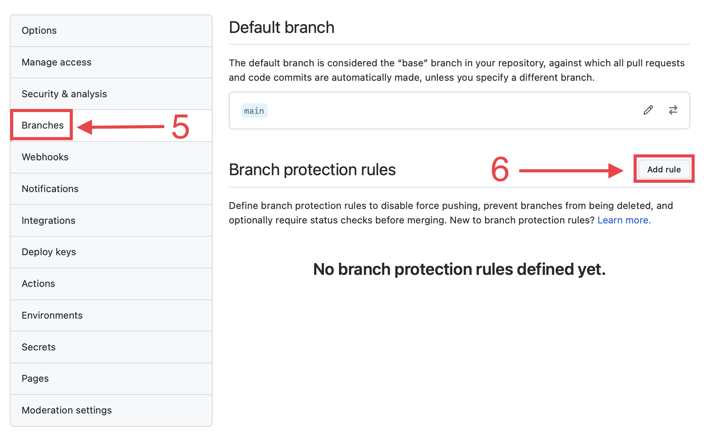
- Enter a branch pattern name
- Click on Require status checks to pass before merging
- Search build-and-deploy-site in the list.
- Click on Create ! 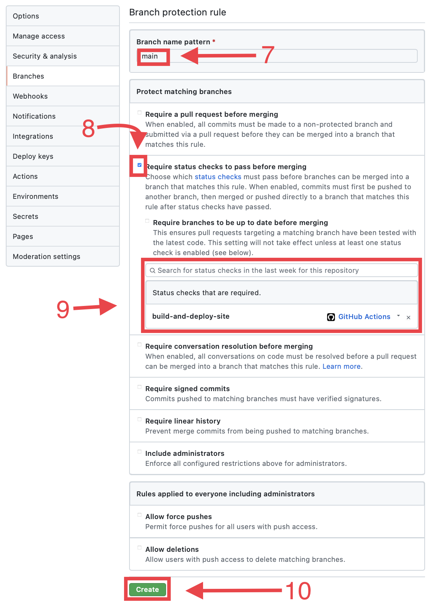
- Now go in Pages
- Select the gh-pages branch
- Click on Save 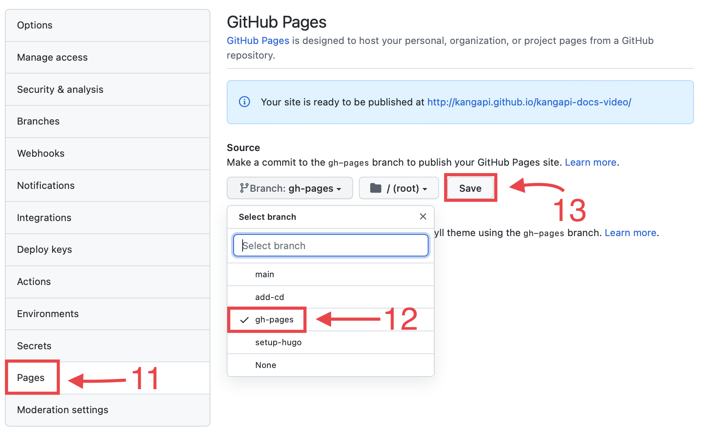
- You should see an amazing website !!!!! 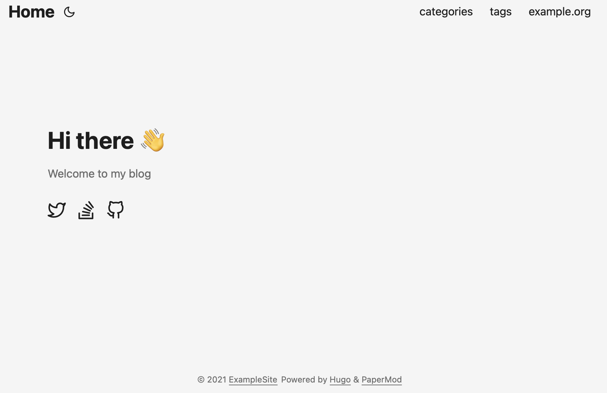
-
You can finish with
- Exemple Page
--- title: "My 1st post" date: 2020-09-15T11:30:03+00:00 # weight: 1 # aliases: ["/first"] tags: ["first"] author: "Me" # author: ["Me", "You"] # multiple authors showToc: true TocOpen: false draft: false hidemeta: false comments: false description: "Desc Text." canonicalURL: "https://canonical.url/to/page" disableHLJS: true # to disable highlightjs disableShare: false disableHLJS: false hideSummary: false searchHidden: true ShowReadingTime: true ShowBreadCrumbs: true ShowPostNavLinks: true cover: image: "<image path/url>" # image path/url alt: "<alt text>" # alt text caption: "<text>" # display caption under cover relative: false # when using page bundles set this to true hidden: true # only hide on current single page editPost: URL: "https://github.com/<path_to_repo>/content" Text: "Suggest Changes" # edit text appendFilePath: true # to append file path to Edit link ---
Last update:
January 2, 2023